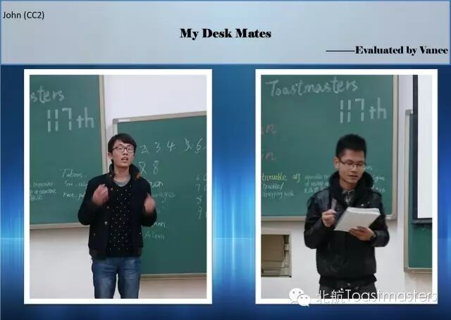
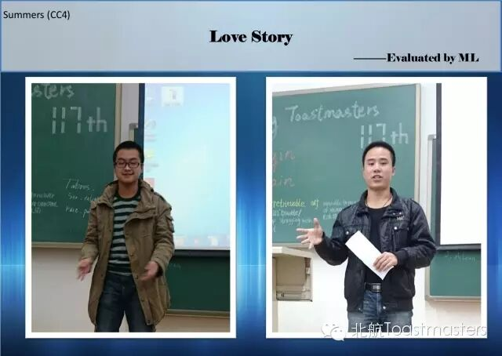
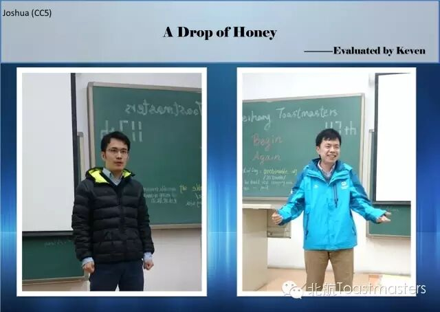

← 返回存档目录
今年北京的第一场雪在上周五如期而至，虽然很快就融化了，但做为一个爱雪如初恋的南方人，小编还是为那天与雪的短暂相聚而兴奋着呢~Keven,大帝那天可能是英语线路出了点问题，也可能是中文太无可取代了，在TT环节蹦出了好几句“与其在别人的生命中做配角，不如。。。。”“如果上天再给我一次机会，我会。。。”这样的经典台词，后来才知道，原来大帝是想表达：该办中文meeting了~Courage(好名字),她跟我们分享了她的两个高三给她带来的改变，从一个Just think about myself 转变为一个学会感恩学会分享的人，不仅高三的学习是Begin again,个人的性格观念也一样Begin again~Grace2,被问到最想再去到什么地方，Grace毫不犹豫地说是三亚，因为曾经短暂的停留和三亚碧绿的大海在她心里成为了一种美丽的遗憾，希望早日弥补上遗憾哦~Ethan&Aileen,一对曾经的恋人在大雪中偶遇，是浪漫呢还是尴尬，面对Ethan诸如“You are the only woman in my heart”、“想要重新开始”这样的糖衣炮弹，曾经因他的不辞而别而受伤太深的Aileen会答应么，其实小编没有听到Aileen的答案，可能是我当时也在想，要是我，我该答应么？后来发现完全就不用想么，因为根本就没有曾经的恋人嘛<哭>~Cicily&Crystal,小编相信，Cicily和Crystal在现实生活中肯定就是一对好姐妹，就像在台上表现的那样，在工作中受挫的Crystal找到了Cicily,而Cicily温柔细腻地引导她，并且提出建议，现实版知心姐姐有木有呀~Jenny,如果有一个机会可以重新开始做一件事，Jenny希望可以继续画画，做一个文艺的姑娘的真好。如果我也有这样一次机会，我会选择学好语文，多读书，这样就有可能写得一手好文章，有机会装装文艺青年神马的，然而如果就是如果，我的文风已经壮士一去不复返了，我还是继续黑人吧。~Chris，有些时候，想要重新开始是很hard的一件事，而Chris告诉我们Don't give up, try sth new.或许有些时候我们真的可以尝试着另一条路，有可能在这条路上走得不顺，只是因为此路不通。高昂的语调和充满正能量的演讲让Chris赢得了大多数观众的青睐，最终获得了Best Table Topic Speaker<鼓掌>（其实是和Jenny票数相同，但Jenny后来走了，遗憾错过颁奖环节）
John真是艳福不浅嘞,小学、初中、高中的同桌都是cute girl，各种小情愫、各种小个性，让台下的观众们各种羡慕呀！其中小编是最羡慕的，话说小编小学时也是个cute girl哦，可是偏偏同桌都是bad boy，于是在他们的各种欺负中练就一身反抗绝技，在以后和女生同桌的经历中一直担当保镖的角色，是的，Kiki就是这样炼成的
Summers的love story，不负众望的来了几个段子，继续了他CC3小学之王的故事，Summers的body language绝对的一流，好伐，这次的vocal variety也是完美。但最后的煽情的部分是我绝对没想到的，不要总是把单身狗挂在嘴上，还是要相信真爱的存在，单身只是为了迎接美好的幸福，所以不要叫我单身狗了，我是一只等待幸福的单身狗
一滴蜂蜜成了一个身处绝境的旅人的全部希望，一滴蜂蜜也可以成为千万个普通工人的精神支持（那是亲情)，一滴蜂蜜是远渡重洋的游子心里的期盼(那是责任)，当我们迷茫的时候问问自己，我们的初心是什么，始终怀着一颗赤诚的心，其实有时候我们追求的就是小小的幸福，小小的一滴蜂蜜而已